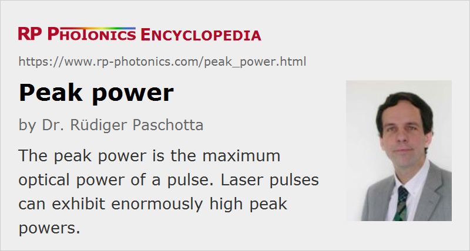

Peak Power
Definition: maximum optical power of a pulse
More general terms: optical power
German: Spitzenleistung
Formula symbol: Pp
Units: W
How to cite the article; suggest additional literature
Author: Dr. Rüdiger Paschotta
The peak power of an optical pulse is the maximum occurring optical power. Due to the short pulse durations which are possible with optical pulses, peak powers can become very high even for moderately energetic pulses. For example, a pulse energy of 1 mJ in a 10-fs pulse, as can be generated with a mode-locked laser and a regenerative amplifier of moderate size, already leads to a peak power of the order of 100 GW, which is approximately the combined power of a hundred large nuclear power stations. Focusing such a pulse to a spot with e.g. 4 μm radius leads to enormous peak intensities of the order of 4 × 1021 W/m2 = 4 × 1017 W/cm2. Peak powers in the terawatt range can be generated with devices of still moderate size (fitting into a 20-m2 room). Large facilities based on multi-stage chirped-pulse amplifiers can even generate pulses with petawatt peak powers.
For handling the large numbers associated with high peak powers, the following prefixes are often used:
- 1 kW (kilowatt) = 103 W
- 1 MW (megawatt) = 106 W
- 1 GW (gigawatt) = 109 W
- 1 TW (terawatt) = 1012 W
- 1 PW (petawatt) = 1015 W
Measurement of Peak Power
For relatively long pulses, the peak power can be measured directly e.g. with a photodiode which monitors the optical power versus time. For pulse durations below a few tens of picoseconds, this method is no longer viable. The peak power is then often calculated from the (full width at half-maximum, FWHM) pulse duration τp (measured e.g. with an optical autocorrelator) and the pulse energy Ep. The conversion depends on the temporal shape of the pulse. For example, for soliton pulses (with a sech2 shape) the peak power is
For Gaussian-shaped pulses, the constant factor is ≈ 0.94 instead of 0.88. If pulses are subject to strong nonlinear pulse distortions or similar effects, a significant part of their pulse energy may be contained in their temporal wings, and the relation between peak power and pulse energy may be substantially modified.
Some authors even totally ignore such factors and present the simple ratio of pulse energy and pulse duration as the peak power.
Ambiguities
Strictly, the peak power as defined above (the maximum occurring optical power) is ambiguous; it depends on the temporal resolution (or bandwidth) of the power measurement. For example, Q-switched lasers often exhibit mode beating, i.e., an oscillation of power related to the beating of electric-field oscillations in different resonator modes. A photodetector may be too slow to resolve these power oscillations, and one may intentionally ignore such fast oscillations for the definition of peak power.
Questions and Comments from Users
Here you can submit questions and comments. As far as they get accepted by the author, they will appear above this paragraph together with the author’s answer. The author will decide on acceptance based on certain criteria. Essentially, the issue must be of sufficiently broad interest.
Please do not enter personal data here; we would otherwise delete it soon. (See also our privacy declaration.) If you wish to receive personal feedback or consultancy from the author, please contact him e.g. via e-mail.
By submitting the information, you give your consent to the potential publication of your inputs on our website according to our rules. (If you later retract your consent, we will delete those inputs.) As your inputs are first reviewed by the author, they may be published with some delay.
See also: pulses, optical power, pulse energy, pulse duration, optical intensity
and other articles in the category light pulses
|  |
If you like this page, please share the link with your friends and colleagues, e.g. via social media:
These sharing buttons are implemented in a privacy-friendly way!